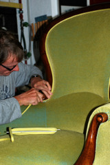

Porträt
| 1963 | Geboren in Bern |
| 1980 | Beginn der Lehre als Tapezierer-Dekorateur bei Alfred Späth in der Berner Matte |
| 1984 | Lehrabschluss in Bern |
| 1990 | Eidg. dipl. Tapezierermeister-Dekorateur |
| 1991 | Eröffnung Wohnwerkstatt |
Ich arbeite in der dritten Generation.
Johann Josi
Hans Josi

Daniel Josi